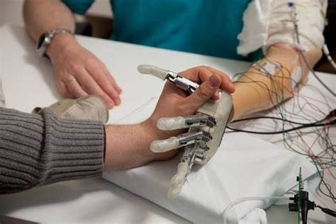

Explora los límites de la Medicina
Las prótesis con capacidades ampliadas no solo buscan restaurar funciones perdidas, sino que están diseñadas para superar las capacidades físicas naturales del cuerpo humano. Este enfoque innovador combina tecnología avanzada, biomecánica e inteligencia artificial, ofreciendo un nuevo paradigma en el diseño de dispositivos protésicos: el potencial de amplificar las habilidades humanas.
Estas prótesis van más allá de la funcionalidad básica al proporcionar características que exceden lo que una extremidad o sistema biológico puede lograr. Por ejemplo: Aumentar la fuerza, velocidad o resistencia. Incorporar sentidos adicionales como visión nocturna o detección de radiación. Integrar herramientas especializadas directamente en el diseño de la prótesis.
rótesis diseñadas con actuadores avanzados que permiten levantar o manipular pesos muy superiores a los que podría soportar una extremidad natural. Uso en entornos industriales o militares.
Brazos o piernas equipados con herramientas intercambiables, como destornilladores, pinzas especializadas, o incluso dispositivos médicos. Diseños personalizados para actividades como buceo en profundidad o exploración en entornos extremos.
Prótesis que incorporan sensores de alta precisión para detectar señales que el cuerpo humano no puede percibir, como campos electromagnéticos o vibraciones ultrasónicas. Aplicaciones potenciales en campos como la ingeniería, la medicina o la exploración espacial.
Piernas protésicas diseñadas para correr a velocidades superiores a las de un humano promedio. Tecnologías que optimizan el consumo energético, permitiendo caminar o correr durante largas distancias sin fatiga.
Prótesis visuales (ojos biónicos) que incluyen visión nocturna, zoom óptico o detección de calor, ampliando los límites del ojo humano. Integración con realidad aumentada para ofrecer información en tiempo real al usuario.
Interfaces cerebro-máquina que no solo permiten un control más preciso, sino también la ejecución de múltiples tareas simultáneas. Prótesis que se anticipan a los movimientos o necesidades del usuario mediante algoritmos predictivos.
Prótesis que se ajustan automáticamente al entorno (cambio de terrenos, alturas o condiciones climáticas). Uso de materiales inteligentes capaces de autorrepararse en caso de daño, prolongando la vida útil del dispositivo.
Prótesis conectadas a redes IoT, que permiten al usuario recibir actualizaciones, monitorear datos de rendimiento e incluso controlar dispositivos remotos a través de su prótesis.
Militar y Seguridad: Equipos que permiten a soldados y trabajadores de rescate operar en condiciones extremas. Exploración Espacial: Dispositivos diseñados para soportar entornos sin gravedad o con radiación alta. Deportes y Competencias: Prótesis que maximizan el rendimiento atlético y redefinen las barreras en deportes paralímpicos. Industria y Construcción: Herramientas integradas que optimizan el trabajo físico pesado.
Dilemas sobre la Ampliación Humana: ¿Dónde se traza la línea entre necesidad médica y mejora opcional? Desigualdad en el Acceso: La tecnología avanzada puede ser económicamente inaccesible para muchos. Riesgos de Mal Uso: Posibles aplicaciones no éticas, como la militarización de estas capacidades.
Estas prótesis son una ventana hacia un futuro donde el cuerpo humano y la tecnología se fusionan, abriendo posibilidades ilimitadas. La investigación continúa explorando cómo estas tecnologías pueden integrarse de manera segura y ética, transformando no solo la vida de las personas con amputaciones, sino también la comprensión de lo que significa ser humano.
